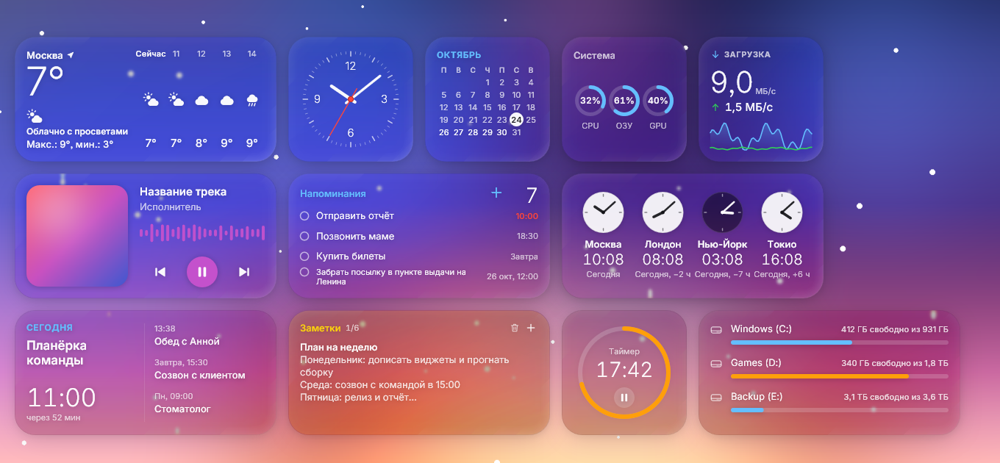
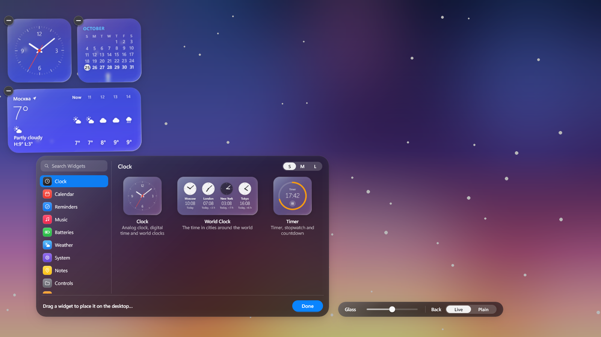
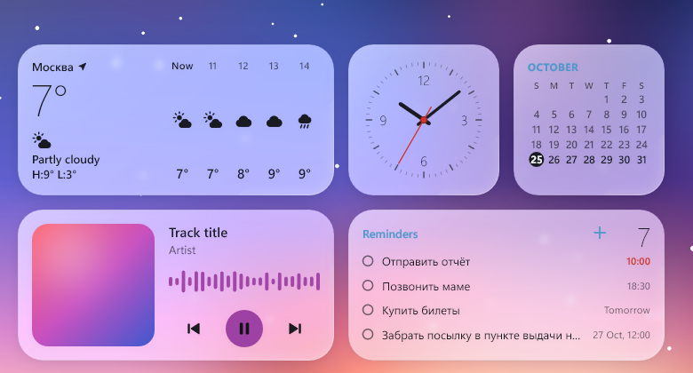
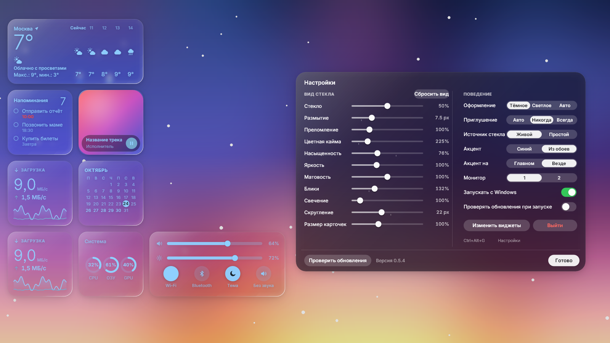

Native desktop widgets for Windows 10/11 with a Liquid-Glass look: translucent cards that refract your wallpaper, live ones too. Нативные виджеты рабочего стола для Windows 10/11 в стиле «жидкого стекла»: полупрозрачные карточки с преломлением поверх обоев, в том числе живых.
Download for WindowsСкачать для WindowsWindows 10/11 · x64 · installer of about 1 MB · free, MITWindows 10/11 · x64 · установщик около 1 МБ · бесплатно, MIT

Each card refracts and blurs the wallpaper behind it, with a chromatic fringe, a specular highlight that follows the light and a soft materialise animation. Cards that touch merge into one blob. Каждая карточка преломляет и размывает обои за собой: хроматическая кайма, блик, следующий за светом, мягкое появление. Касающиеся карточки сливаются в одну каплю.
Dark glass by default, light or auto on demand, with crisp, smooth Inter typography (bundled, SIL OFL). По умолчанию тёмное стекло, светлое или авто по желанию; чёткий гладкий шрифт Inter (в комплекте, SIL OFL).
The glass reads the wallpaper window itself, so it follows videos and animated wallpapers. Стекло читает само окно обоев, поэтому следует за видео и анимированными обоями.
Screenshots and screen recorders see the widgets: the layer never captures itself. Скриншоты и запись экрана видят виджеты: слой никогда не захватывает сам себя.
One transparent layered window drawn with Direct2D on the GPU. No WebView, no Electron: about 100 MB of RAM and under 10 % of one core with an animated wallpaper. Одно прозрачное окно, рисуется Direct2D на GPU. Без WebView и Electron: около 100 МБ ОЗУ и меньше 10 % одного ядра при анимированных обоях.
The network is used only by the widgets that need it (weather, rates, quote, site icons). No telemetry. Сеть используют только виджеты, которым она нужна (погода, курсы, цитата, значки сайтов). Телеметрии нет.



Cards come in S / M / L sizes, snap to a grid, can be dragged and merge into one blob when they touch.Карточки бывают S / M / L, привязываются к сетке, перетаскиваются и сливаются в одну каплю при касании.
GlassWidgets_<version>_x64-setup.exe from the latest release and run it.Скачайте GlassWidgets_<версия>_x64-setup.exe из последнего релиза и запустите.^ chevron.Программа живёт в области уведомлений; Windows 11 может спрятать значок под стрелкой ^.KeysКлавиши
winget: not available yet, a package is being prepared (see the README).winget: пока недоступен, пакет готовится (см. README).